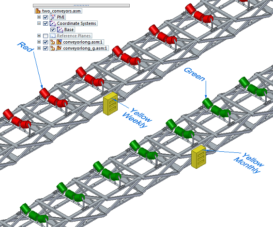
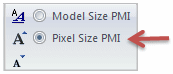

Show custom occurrence properties in PMI
If custom occurrence properties and values are defined in an assembly using the Occurrence Properties dialog box, you can add associative PMI callouts to a model to extract the unique custom property values of each occurrence of a part.
-
Choose the PMI tab→Annotation group→Callout command .
-
In the Callout Properties dialog box, on the General tab, click in the Callout text box, and then click the Property Text button
 .
. -
In the Select Property Text dialog box, from the Source list at top-right, select one of the following sources based on the type of model to which you are attaching the annotation and at what level the custom occurrence properties were defined.
-
From graphic connection—Property values are retrieved from the top-level assembly, subassembly, or part.
-
From graphic connection to part—Property values are retrieved from the part to which the annotation is connected.
-
From graphic connection to assembly—Property values are retrieved from the assembly or subassembly that is the immediate parent of the part to which an annotation is attached.
The Properties list updates to show all of the custom occurrence properties at the top of the list, with the property name followed by (Occurrence Property).
-
-
In the Properties list, click the custom occurrence property that you want to reference in the callout, and then click the Select button.
Tip:You also can double-click the property name to select it. For example, double-click Maintenance (Occurrence Property).
-
Click OK to close the Select Property Text dialog box.
-
Click OK to close the Callout Properties dialog box.
-
On the model, locate an occurrence of the object and click to place the callout.
-
Continue clicking the other occurrences of the part that you want to document with the custom occurrence property values. You also can reopen the Callout Properties dialog box from the command bar to change the custom occurrence property name and source that you show in a callout.

-
To update the property text values in the callouts when the model changes, use the PMI tab→Property Text group→Update All command.
-
You can change the size of the PMI text. Before you place the callout, you can use the PMI tab→Dimension group→Pixel Size PMI command.

After you place the callout, you can click the adjacent Increase PMI Font button to make selected text larger, to a maximum of 160 pixels.
How do I
Display and edit PMI elementsAdd PMI dimensions and annotations
Select multiple reference elements
Create PMI dimensions from the assembly level
Place a PMI dimension using an intersection point
Set a PMI dimension and annotation plane
Move PMI elements in 3D
Reposition PMI text, lines, and arrows
Copy PMI elements from a sketch or feature
Add or remove PMI elements in a model view
Learn more
PMI dimensions and annotationsPMI edit handles and cursors
Placing PMI dimensions using intersection points
Look up more details
Lock Plane commandLock Dimension Plane command bar
Move Dimension command
Add To Model View command
Remove From Model View command